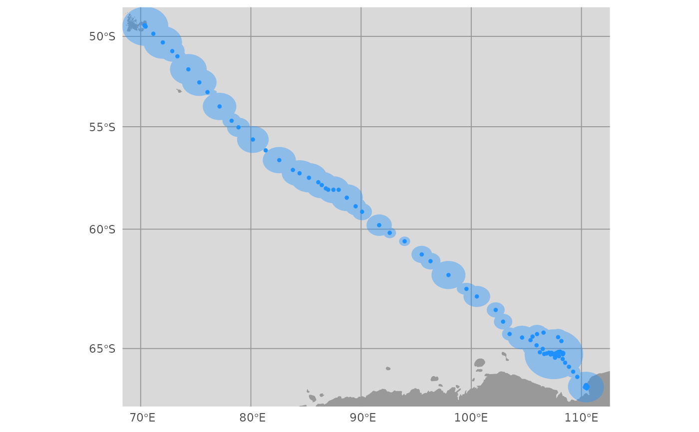

map aniMotum-estimated locations and behavioural indices with coastline and projection options
a aniMotum ssm fit object with class ssm_df or (old) fG_ssm
optionally, a aniMotum mpm fit object with class mpm_df or (old)
fG_mpm
specify which location estimates to map: fitted, predicted or rerouted
a list of map controls and aesthetics (shape, size, col, fill, alpha)
for each map feature (estimated locations, confidence ellipses, track lines,
observed locations, land masses, water bodies). Constructed by aes_lst() and
can be modified for custom maps (see examples)
when mapping multiple tracks, should locations be coloured by
id (logical; default = TRUE if nrow(x) > 1 else FALSE; ignored if behavioural
index provided)
when mapping single tracks, should locations be coloured by date (logical; default = FALSE; ignored if behavioural index provided)
proj4string for re-projecting locations, if NULL the
default projection (Mercator) for the fitting the SSM will be used
proportion (can exceed 1) to extend the plot range in x and y dimensions
distance (in km) to buffer locations for subsetting land
polygons (default = 10000). If map extents are expanded by many factors then
the buffer distance may need to be increased, otherwise this should not be
used. Ignored if map_type != "default".
background map type ("default" uses rnaturalearth::ne_countries
to add land polygons). If the rnaturalearthdata package is installed then
high-resolution land polygons will be used. If the ggspatial
and rosm packages are installed then any tile map type returned by
rosm::osm.types can be used for a potentially more detailed coastline at
fine spatial scales, given appropriate zoom settings
(see ggspatial::annotation_map_tile for details).
logical; if output includes a move persistence estimate, should g (the move persistence index) be normalised to have minimum = 0 and maximum = 1 (default = TRUE).
logical; should g be normalised among individuals as a group, a 'relative g', or separately to highlight regions of lowest and highest move persistence along a track (default = FALSE).
logical; generate maps silently (default = FALSE).
additional arguments passed to ggspatial::annotation_map_tile
a map as a ggplot2 object
# create an ssm fit object
fit <- fit_ssm(ellie, model = "rw", time.step = 24, control = ssm_control(verbose = 0))
#>
# render default map
map(fit, what = "p")
#> using map scale: 10
